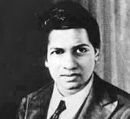

CSCE 121: Introduction to Program Design and Concepts
Lab Exercise One
Objective
The aim of this little assignment is to pick up some basic
input and output techniques, to practice using int and
bool variables, and to get used to the edit-compile-run cycle.
How far must I get?
Other than the last question, which is marked with an asterisk, you should attempt to finish these questions in your lab. If you don't complete them in the lab, you'll need to devote some outside time to complete the exercises. (The first few weeks will have very limited reading for the class, so you should have extra time allotted, and that is best used in programming.)
Warming up
Write a program that asks the user for two whole numbers, then tells how many
times the larger is divisible by the lesser. Do this without using any floating-point
mathematics, that is you should be able to get by with the +,
-, / and % arithmetic operations. (If
you don't know of the latter two, you can look here, or
ask for advice, or do a search.)
Here's an example run:
Please enter a number: 5 Please enter a second number: 64 Thank you. Did you know that 5 divides 64 a total of 12 times?
And here's another:
Please enter a number: 370 Please enter a second number: 12 Thank you. Did you know that 12 divides 370 a total of 30 times?
Warming up, revisited
- In your answer to the previous question, what if one of the numbers above was given as zero? Try it on your code.
- Add code that outputs an error message in the case of a zero.
- The input above is supposed to be a whole number, so you must handle the case of a negative integer input. Do this by looping until a satisfactory input is provided by the user.
Diamonds and crosses
Here are two problems, they're both similar so you can pick one to do in the lab. Save the other for practice, or if you needed a lot of help for the first one, then try do the second one all on your own.
Diamonds
Write a program that prompts the user for a number and prints a diamond shape with that many characters per side. Here are some examples that helps to make clear what is needed:
Gimme a number: 4 @ @ @ @ @ @ @ @ @ @ @ @ |
Gimme a number: 5
@
@ @
@ @
@ @
@ @
@ @
@ @
@ @
@
|
Gimme a number: 6
@
@ @
@ @
@ @
@ @
@ @
@ @
@ @
@ @
@ @
@
|
Note how the left edge is right up against the left hand side? Try to replicate that.
Crosses
Write a program that prompts the user for a number and prints a cross of that size. Again the examples help to illustrate:
A number please: 4 | | | ---+--- | | | |
A number please: 5
|
|
|
|
----+----
|
|
|
|
|
A number please: 7
|
|
|
|
|
|
------+------
|
|
|
|
|
|
|
The smallest taxicab number
 You may have heard of the Indian mathematician Srinivasa Ramanujan; he's the man about whom a film was made a couple of years ago. Littlewood remarked that every positive integer was one of Ramanujan's personal friends, and the following story relates why.
Ramanujan was famous for several things, including his discovery of the infinite series for pi. Among them is this story of the number 1729, retold by G. H. Hardy, after a visit he made to Ramanujan, who was in hospital:
[I]n the taxi from London, Hardy noticed its number, 1729. He must have thought about it a little because he entered the room where Ramanujan lay in bed and, with scarcely a hello, blurted out his disappointment with it. It was, he declared, ‘rather a dull number,’ adding that he hoped that wasn't a bad omen.
‘No, Hardy,’ said Ramanujan, ‘it is a very interesting number. It is the smallest number expressible as the sum of two positive cubes in two different ways.’
Verify this claim by writing a program that takes an integer n as
input and counts the number of ways that numbers up to n can be
expressed as the sum of two positive cubes.
From that day onwards, numbers that are the sum of two positive cubes in multiple distinct ways have been known as Taxicab Numbers. The number 87539319 is the next one.
Pepys' question
In 1693 Samuel Pepys
wrote to Isaac Newton asking the following question.
Which is more likely: getting 1 at least once when rolling a
fair die six times or getting 1 at least twice when
rolling it 12 times?
Newton took the time to work it out and replied.
Write a program that could have provided Newton with a quick answer. You should do this without invoking any need to use random numbers: think about the equations and then have the computer do the tedious arithmetic.
Downhill slalom*
Of course Newton was able to respond because they had more time back in those days; back in 1693 they didn't have binge watching or computer games….
Save the following two files in your home directory on compute.tamu.edu:
- ski.cpp — this ~100 line file has the main program. You'll be able to understand almost all of it.
- rawkb.h — this is an extra header file, needed to get access to the key strokes. It contains some obscure Linux hackery.
ski.cpp via the usual commands: g++ ski.cpp -o ski Run it and play around with it for a bit.
Here are some modifications you can make to customize it:
- Tweak the parameters to make it harder, faster, or whatever. See what they do.
- If you count the number of times the game's while loop runs, you can give the player a score.
- Print a huge game over banner at the end of the game. You can get some swank ASCII art here, for example.
- After the player crashes, you can prompt:
Play again? [Y/N]
and repeat... - You could make the game get progressively harder (either narrowing the
gapsizeor speeding it up) as the play goes on longer. - Perhaps the snow on either side should be dotted with trees every so often?
- If you are using a decent terminal program, then one can display color. Here's a simple example of how. (More ESC formatting codes are listed here.)
* This is material outside the scope for lab quizzes.
Acknowledgements
The idea of using the taxicab numbers and Pepys' question as a programming exercise is from
Sedgewick and Wayne's book "Computer Science: An Interdisciplinary Approach".
The photo of Srinivasa Ramanujan is an edited version of an image in the public domain.
The quotation of Hardy's hospital bedside conversation with
Ramanujan with is from
C. P. Snow's foreword to G. H. Hardy's “A Mathematician's Apology”
Cambridge University Press, p. 37, 1993. (The version with Snow's
foreword is highly recommended as his personal recollections on Hardy are
almost as long as Hardy's little book itself.)